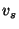
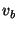
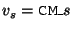
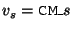

Most control parameters that affect CM's operation can be adjusted using environment variables  at startup time, i.e, when the sml command is invoked. Each such parameter has a default setting. Default settings are determined at bootstrap time, i.e., the time when the heap image for SML/NJ's interactive system is built.17 At bootstrap time, it is possible to adjust defaults by using a different set of environment variables . If neither nor were set, a hard-wired fallback value will be used.
The rule for constructing (the names of) and is the
following: For each adjustable parameter there is a name
stem. If the stem for is  , then
 and
, then
 and
 .
.
Since the normal installation procedure for SML/NJ sets some of the variables at bootstrap time, there are two columns with default values in the following table. The value labeled fallback is the one that would have been used had there been no environment variable at bootrap time, the one labeled default is the one the user will actually see.
To save space, the table lists the stem but not the names for its associated (longer) and . For example, since the the table shows VERBOSE in the row for CM.Control.verbose, CM's per-session verbosity can be adjusted using CM_VERBOSE and the boot-time default can be set using CM_VERBOSE_DEFAULT.
| CM.Control. |
stem | type | fallback | default | default's meaning | ||
| verbose | VERBOSE | bool | true | same | issue progess messages | ||
| debug | DEBUG | bool | false | same | do not issue debug messages | ||
| keep_going | KEEP_GOING | bool | false | same | quit on first error | ||
| (none) | PATHCONFIG | string | see below | see below | central path configuration file | ||
| parse_caching | PARSE_CACHING | int | 100 | same | at most 100 parse trees will be cached in main memory | ||
| (none) | LOCAL_PATHCONFIG | string | see below | same | user-specific path configuration file | ||
| warn_obsolete | WARN_OBSOLETE | bool | true | same | issue warnings about obsolete C-style operators in description files | ||
| conserve_memory | CONSERVE_MEMORY | bool | false | same | avoid repeated I/O operations by keeping certain information in main memory |
The fallback for PATHCONFIG is /usr/lib/smlnj-pathconfig, but the standard installation overrides this and uses $INSTALLDIR/lib/pathconfig (where $INSTALLDIR is the SML/NJ installation directory) instead.
The default for the ``local'' path configuration file is .smlnj-pathconfig. This file is located in the user's home directory (given by the environment variable $HOME).